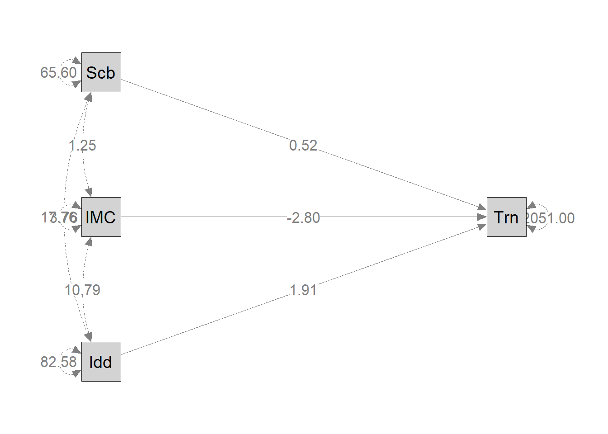
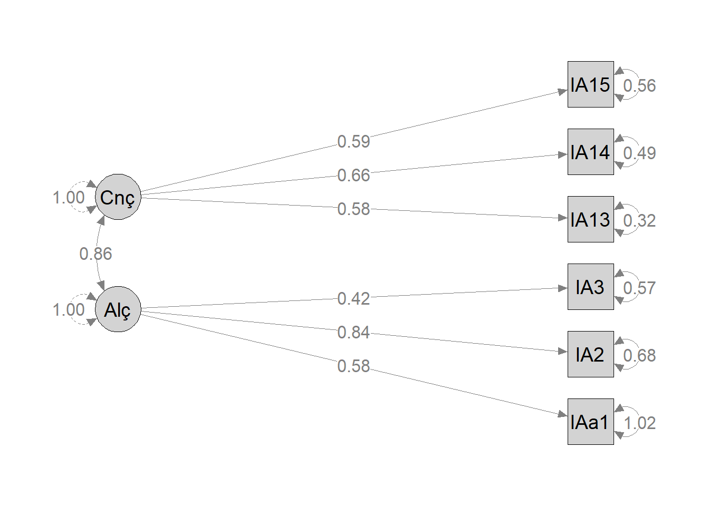
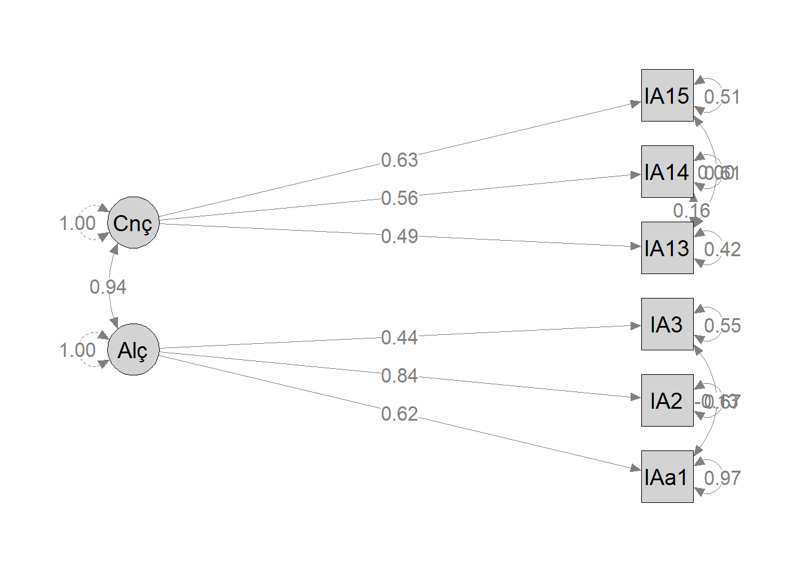

✓ Pacotes de SEM carregados!Lista 8: CFA e Path Analysis
📚 O que é SEM?
Structural Equation Modeling (SEM)
Técnica estatística que combina: - Análise de regressão: Relações direcionais entre variáveis - Análise fatorial: Variáveis latentes não-observadas
Dois componentes principais:
1. Path Analysis (Análise de Caminhos) - Relações entre variáveis observadas - Testa modelos teóricos de causalidade - Análise de mediação e moderação
2. CFA (Confirmatory Factor Analysis) - Testa estrutura de variáveis latentes - Confirmação de fatores teóricos - Validação de questionários/escalas
📦 Pacotes
🎯 Parte A: Path Analysis
Contexto dos Dados
Tip
Dados: 94 pessoas
Variáveis: - Idade: Anos - IMC1: Índice de Massa Corporal - Sociabilidade: Escore de questionário - Treinos: Número de treinos (VD)
Pergunta: Como Idade, IMC e Sociabilidade afetam frequência de treinos?
Carregar Dados
dados_path <- read.spss("DADOS PATH.sav", to.data.frame = TRUE)
glimpse(dados_path)Rows: 94
Columns: 4
$ Idade <dbl> 57, 41, 29, 26, 33, 37, 26, 44, 31, 36, 30, 55, 43, 27, …
$ IMC1 <dbl> 28.46122, 32.62609, 26.99050, 19.03602, 28.76650, 24.686…
$ Treinos <dbl> 108, 144, 48, 102, 123, 63, 39, 105, 6, 48, 144, 144, 11…
$ Sociabilidade <dbl> 14, 34, 17, 20, 26, 19, 15, 32, 27, 19, 28, 9, 30, 29, 1…Baseline: Regressão Linear
modelo_lm <- lm(Treinos ~ Idade + IMC1 + Sociabilidade,
data = dados_path)
summary(modelo_lm)$coefficients %>%
kable(digits = 3, caption = "Coeficientes de Regressão Linear")| Estimate | Std. Error | t value | Pr(>|t|) | |
|---|---|---|---|---|
| (Intercept) | 78.010 | 33.132 | 2.355 | 0.021 |
| Idade | 1.907 | 0.548 | 3.480 | 0.001 |
| IMC1 | -2.802 | 1.181 | -2.373 | 0.020 |
| Sociabilidade | 0.518 | 0.590 | 0.877 | 0.383 |
Modelo de Path Analysis
Sintaxe lavaan
Em SEM, especificamos modelos com texto:
~ = “é regredido por” (Y ~ X)
=~ = “é medido por” (Fator =~ itens)
~~ = “covaria com”
# Especificar modelo (idêntico à regressão)
path_modelo <- "Treinos ~ Idade + IMC1 + Sociabilidade"
# Ajustar
fit_path <- sem(path_modelo, data = dados_path)Resultados da Path Analysis
summary(fit_path, standardized = TRUE, fit.measures = TRUE)lavaan 0.6-19 ended normally after 1 iteration
Estimator ML
Optimization method NLMINB
Number of model parameters 4
Number of observations 94
Model Test User Model:
Test statistic 0.000
Degrees of freedom 0
Model Test Baseline Model:
Test statistic 14.649
Degrees of freedom 3
P-value 0.002
User Model versus Baseline Model:
Comparative Fit Index (CFI) 1.000
Tucker-Lewis Index (TLI) 1.000
Loglikelihood and Information Criteria:
Loglikelihood user model (H0) -491.806
Loglikelihood unrestricted model (H1) -491.806
Akaike (AIC) 991.612
Bayesian (BIC) 1001.785
Sample-size adjusted Bayesian (SABIC) 989.157
Root Mean Square Error of Approximation:
RMSEA 0.000
90 Percent confidence interval - lower 0.000
90 Percent confidence interval - upper 0.000
P-value H_0: RMSEA <= 0.050 NA
P-value H_0: RMSEA >= 0.080 NA
Standardized Root Mean Square Residual:
SRMR 0.000
Parameter Estimates:
Standard errors Standard
Information Expected
Information saturated (h1) model Structured
Regressions:
Estimate Std.Err z-value P(>|z|) Std.lv Std.all
Treinos ~
Idade 1.907 0.536 3.557 0.000 1.907 0.354
IMC1 -2.802 1.156 -2.425 0.015 -2.802 -0.241
Sociabilidade 0.518 0.578 0.896 0.370 0.518 0.086
Variances:
Estimate Std.Err z-value P(>|z|) Std.lv Std.all
.Treinos 2050.999 299.169 6.856 0.000 2050.999 0.856Tabela de Estimativas
parameterEstimates(fit_path) %>%
filter(op == "~") %>%
select(lhs, op, rhs, est, se, z, pvalue, ci.lower, ci.upper) %>%
kable(
digits = 3,
col.names = c("VD", "←", "VI", "β", "EP", "z", "p", "IC_low", "IC_up"),
caption = "Estimativas de Parâmetros (Path Analysis)"
)| VD | ← | VI | β | EP | z | p | IC_low | IC_up |
|---|---|---|---|---|---|---|---|---|
| Treinos | ~ | Idade | 1.907 | 0.536 | 3.557 | 0.000 | 0.856 | 2.958 |
| Treinos | ~ | IMC1 | -2.802 | 1.156 | -2.425 | 0.015 | -5.067 | -0.537 |
| Treinos | ~ | Sociabilidade | 0.518 | 0.578 | 0.896 | 0.370 | -0.614 | 1.650 |
📊 Comparação: Path vs Regressão
Resultados são idênticos! Path Analysis com apenas variáveis observadas = Regressão Linear.
Vantagem do SEM: Permite modelos mais complexos (múltiplas VDs, mediação, variáveis latentes)
Índices de Ajuste
model_performance(
fit_path,
metrics = c("Chi2", "Chi2_df", "NFI", "NNFI", "CFI",
"RMSEA", "AIC", "BIC")
) %>%
kable(digits = 3, caption = "Índices de Ajuste do Modelo")| Chi2 | Chi2_df | NFI | NNFI | CFI | RMSEA | AIC | BIC |
|---|---|---|---|---|---|---|---|
| 0 | 0 | 1 | 1 | 1 | 0 | 991.612 | 1001.785 |
🔍 Interpretando Índices de Ajuste
χ² (Chi-quadrado): - Testa H₀: modelo perfeito - p > 0.05 = bom ajuste (mas sensível a N)
CFI (Comparative Fit Index): - Compara com modelo nulo - > 0.90 aceitável, > 0.95 bom
RMSEA (Root Mean Square Error): - < 0.05 excelente - 0.05-0.08 aceitável - > 0.10 pobre
AIC/BIC: Comparação entre modelos (menor = melhor)
Diagrama do Modelo
semPaths(
fit_path,
what = "std",
whatLabels = "par",
style = "ram",
layout = "tree",
rotation = 2,
sizeMan = 8,
edge.label.cex = 1.2,
label.cex = 1.3,
color = list(man = "lightblue", lat = "lightgreen")
)
🎯 Parte B: Análise Fatorial Confirmatória (CFA)
Contexto Teórico
Escala de Apego a Amigos (IAA)
Teoria: Apego a amigos tem 2 dimensões latentes:
1. Alienação (sentir-se isolado) - IAa1, IAa2, IAa3
2. Confiança (segurança nas amizades) - IAa13, IAa14, IAa15
Objetivo: Confirmar essa estrutura com CFA
Carregar Dados
dados_cfa <- read.spss("fatorial CFA.sav", to.data.frame = TRUE)
glimpse(dados_cfa)Rows: 348
Columns: 26
$ Protocolo <dbl> 1, 2, 3, 4, 5, 6, 7, 8, 9, 10, 11, 12, 13, 14, 15, 16, 17, 1…
$ IAa1 <dbl> 3, 5, 4, 5, 3, 3, 1, 1, 2, 3, 5, 3, 3, 5, 3, 4, 2, 4, 1, 5, …
$ IAa2 <dbl> 3, 5, 3, 3, 1, 3, 2, 3, 2, 4, 3, 4, 4, 4, 3, 3, 3, 2, 3, 2, …
$ IAa3 <dbl> 3, 5, 4, 3, 2, 2, 4, 5, 3, 4, 5, 3, 4, 3, 4, 4, 3, 2, 5, 5, …
$ IAa4 <dbl> 3, 2, 4, 2, 1, 1, 1, 1, 4, 2, 1, 1, 2, 1, 2, 3, 2, 2, 1, 2, …
$ IAa5 <dbl> 3, 1, 1, 1, 4, 4, 2, 2, 5, 3, 1, 1, 2, 1, 1, 1, 3, 2, 1, 1, …
$ IAa6 <dbl> 3, 4, 5, 3, 2, 2, 2, 5, 1, 5, 3, 3, 4, 4, 4, 4, 3, 3, 4, 5, …
$ IAa7 <dbl> 3, 3, 3, 3, 5, 4, 1, 3, 1, 4, 1, 4, 3, 4, 3, 2, 2, 3, 1, 5, …
$ IAa8 <dbl> 3, 4, 5, 4, 3, 5, 3, 5, 4, 4, 2, 5, 4, 5, 4, 5, 4, 3, 5, 5, …
$ IAa9 <dbl> 3, 5, 5, 3, 2, 1, 4, 5, 3, 5, 2, 4, 4, 4, 4, 2, 3, 3, 2, 5, …
$ IAa10 <dbl> 3, 2, 2, 2, 3, 3, 1, 5, 4, 4, 3, 1, 1, 3, 2, 2, 3, 4, 1, 3, …
$ IAa11 <dbl> 3, 1, 1, 1, 2, 4, 3, 1, 5, 3, 5, 1, 1, 2, 1, 1, 4, 1, 1, 1, …
$ IAa12 <dbl> 3, 4, 5, 4, 4, 2, 4, 5, 3, 5, 3, 4, 4, 4, 4, 4, 3, 5, 5, 5, …
$ IAa13 <dbl> 3, 4, 5, 5, 4, 5, 3, 5, 2, 5, 4, 5, 4, 5, 4, 5, 4, 5, 5, 5, …
$ IAa14 <dbl> 3, 4, 5, 5, 3, 1, 2, 5, 3, 4, 5, 5, 3, 5, 4, 5, 4, 4, 5, 5, …
$ IAa15 <dbl> 3, 4, 4, 4, 2, 2, 2, 2, 4, 4, 3, 4, 3, 3, 4, 5, 3, 4, 5, 5, …
$ IAa16 <dbl> 3, 4, 4, 3, 3, 3, 3, 4, 2, 4, 3, 4, 4, 4, 3, 3, 3, 2, 1, 5, …
$ IAa17 <dbl> 3, 4, 4, 4, 4, 4, 4, 3, 4, 3, 4, 4, 4, 3, 3, 4, 3, 4, 3, 5, …
$ IAa18 <dbl> 3, 1, 1, 2, 2, 1, 1, 3, 1, 1, 1, 2, 2, 2, 1, 1, 2, 1, 1, 2, …
$ IAa19 <dbl> 3, 5, 5, 4, 5, 2, 5, 3, 1, 4, 4, 5, 3, 4, 4, 4, 2, 5, 4, 5, …
$ IAa20 <dbl> 3, 4, 5, 5, 2, 5, 3, 2, 3, 4, 4, 5, 4, 4, 4, 5, 3, 5, 5, 5, …
$ IAa21 <dbl> 3, 4, 5, 5, 3, 3, 1, 5, 2, 5, 3, 4, 4, 4, 4, 5, 4, 5, 5, 5, …
$ IAa22 <dbl> 3, 1, 3, 1, 3, 5, 3, 2, 4, 4, 5, 2, 2, 3, 1, 3, 2, 3, 2, 5, …
$ IAa23 <dbl> 3, 1, 2, 1, 2, 1, 1, 1, 2, 3, 2, 1, 2, 2, 1, 2, 1, 1, 1, 1, …
$ IAa24 <dbl> 3, 4, 5, 3, 2, 2, 2, 5, 1, 5, 4, 4, 4, 4, 2, 3, 2, 4, 3, 5, …
$ IAa25 <dbl> 3, 5, 4, 3, 4, 4, 4, 5, 3, 4, 4, 4, 3, 4, 3, 5, 2, 5, 5, 5, …Modelo 1: CFA com 2 Fatores
# Especificar modelo
# Variáveis latentes (=~ significa 'medido por')
cfa_eq1 <- "
alienacao =~ IAa1 + IAa2 + IAa3
confianca =~ IAa13 + IAa14 + IAa15
"
# Ajustar
cfa_modelo1 <- cfa(
cfa_eq1,
data = dados_cfa,
std.lv = TRUE # Padronizar variáveis latentes
)std.lv = TRUE
Fixa variância das variáveis latentes em 1 (padronização).
Alternativa: std.lv = FALSE fixa primeira carga fatorial = 1
Resultados do Modelo 1
summary(cfa_modelo1, fit.measures = TRUE, standardized = TRUE)lavaan 0.6-19 ended normally after 18 iterations
Estimator ML
Optimization method NLMINB
Number of model parameters 13
Used Total
Number of observations 347 348
Model Test User Model:
Test statistic 39.166
Degrees of freedom 8
P-value (Chi-square) 0.000
Model Test Baseline Model:
Test statistic 477.985
Degrees of freedom 15
P-value 0.000
User Model versus Baseline Model:
Comparative Fit Index (CFI) 0.933
Tucker-Lewis Index (TLI) 0.874
Loglikelihood and Information Criteria:
Loglikelihood user model (H0) -2688.238
Loglikelihood unrestricted model (H1) -2668.655
Akaike (AIC) 5402.476
Bayesian (BIC) 5452.517
Sample-size adjusted Bayesian (SABIC) 5411.277
Root Mean Square Error of Approximation:
RMSEA 0.106
90 Percent confidence interval - lower 0.074
90 Percent confidence interval - upper 0.140
P-value H_0: RMSEA <= 0.050 0.003
P-value H_0: RMSEA >= 0.080 0.914
Standardized Root Mean Square Residual:
SRMR 0.047
Parameter Estimates:
Standard errors Standard
Information Expected
Information saturated (h1) model Structured
Latent Variables:
Estimate Std.Err z-value P(>|z|) Std.lv Std.all
alienacao =~
IAa1 0.578 0.069 8.408 0.000 0.578 0.496
IAa2 0.842 0.069 12.135 0.000 0.842 0.715
IAa3 0.423 0.051 8.278 0.000 0.423 0.489
confianca =~
IAa13 0.580 0.044 13.279 0.000 0.580 0.718
IAa14 0.660 0.052 12.652 0.000 0.660 0.688
IAa15 0.586 0.053 11.105 0.000 0.586 0.615
Covariances:
Estimate Std.Err z-value P(>|z|) Std.lv Std.all
alienacao ~~
confianca 0.865 0.051 16.807 0.000 0.865 0.865
Variances:
Estimate Std.Err z-value P(>|z|) Std.lv Std.all
.IAa1 1.023 0.088 11.607 0.000 1.023 0.754
.IAa2 0.676 0.089 7.627 0.000 0.676 0.488
.IAa3 0.568 0.049 11.667 0.000 0.568 0.761
.IAa13 0.316 0.036 8.898 0.000 0.316 0.485
.IAa14 0.485 0.051 9.564 0.000 0.485 0.527
.IAa15 0.564 0.052 10.767 0.000 0.564 0.622
alienacao 1.000 1.000 1.000
confianca 1.000 1.000 1.000Tabela de Cargas Fatoriais
parameterEstimates(cfa_modelo1) %>%
filter(op == "=~") %>%
dplyr::select(lhs, rhs, est, se, z, pvalue, ci.lower, ci.upper) %>%
kable(
digits = 3,
col.names = c("Fator", "Item", "λ", "EP", "z", "p", "ci lower", "ci upper"),
caption = "Cargas Fatoriais (Modelo 1)"
)| Fator | Item | λ | EP | z | p | ci lower | ci upper |
|---|---|---|---|---|---|---|---|
| alienacao | IAa1 | 0.578 | 0.069 | 8.408 | 0 | 0.444 | 0.713 |
| alienacao | IAa2 | 0.842 | 0.069 | 12.135 | 0 | 0.706 | 0.978 |
| alienacao | IAa3 | 0.423 | 0.051 | 8.278 | 0 | 0.323 | 0.523 |
| confianca | IAa13 | 0.580 | 0.044 | 13.279 | 0 | 0.494 | 0.665 |
| confianca | IAa14 | 0.660 | 0.052 | 12.652 | 0 | 0.558 | 0.763 |
| confianca | IAa15 | 0.586 | 0.053 | 11.105 | 0 | 0.482 | 0.689 |
📊 Interpretando Cargas (λ)
λ_pad (padronizado): - > 0.70 = Excelente - 0.50-0.70 = Aceitável - < 0.50 = Problemático
Indica quanto cada item “carrega” no fator latente.
Índices de Ajuste - Modelo 1
model_performance(
cfa_modelo1,
metrics = c("Chi2", "Chi2_df", "NFI", "NNFI", "CFI",
"RMSEA", "p_RMSEA", "AIC", "BIC")
) %>%
kable(digits = 3, caption = "Ajuste do Modelo 1")| Chi2 | Chi2_df | NFI | NNFI | CFI | RMSEA | p_RMSEA | AIC | BIC |
|---|---|---|---|---|---|---|---|---|
| 39.166 | 8 | 0.918 | 0.874 | 0.933 | 0.106 | 0.003 | 5402.476 | 5452.517 |
⚠️ Ajuste Moderado
- CFI/NNFI: Bons (> 0.90)
- RMSEA: Alto (0.10) → Modelo pode melhorar
Próximo passo: Verificar índices de modificação
Índices de Modificação
modificationindices(cfa_modelo1, sort = TRUE, minimum.value = 5) %>%
head(10) %>%
kable(digits = 3, caption = "Top 10 Modificações Sugeridas")| lhs | op | rhs | mi | epc | sepc.lv | sepc.all | sepc.nox | |
|---|---|---|---|---|---|---|---|---|
| 34 | IAa13 | ~~ | IAa14 | 18.246 | 0.183 | 0.183 | 0.466 | 0.466 |
| 18 | alienacao | =~ | IAa15 | 18.246 | 0.957 | 0.957 | 1.005 | 1.005 |
| 29 | IAa2 | ~~ | IAa14 | 17.160 | -0.204 | -0.204 | -0.357 | -0.357 |
| 30 | IAa2 | ~~ | IAa15 | 10.461 | 0.154 | 0.154 | 0.249 | 0.249 |
| 20 | confianca | =~ | IAa2 | 8.404 | -1.642 | -1.642 | -1.395 | -1.395 |
| 23 | IAa1 | ~~ | IAa3 | 8.404 | -0.139 | -0.139 | -0.182 | -0.182 |
| 35 | IAa13 | ~~ | IAa15 | 5.006 | -0.084 | -0.084 | -0.199 | -0.199 |
| 17 | alienacao | =~ | IAa14 | 5.006 | -0.560 | -0.560 | -0.584 | -0.584 |
🔍 Interpretando MI
MI (Modification Index): - Prediz redução em χ² se parâmetro for liberado - MI > 10 = modificação substancial
EPC (Expected Parameter Change): - Valor esperado do parâmetro
Decisão: Só adicionar se teoricamente justificável!
Modelo 2: Com Covariâncias de Resíduos
cfa_eq2 <- "
# Fatores
alienacao =~ IAa1 + IAa2 + IAa3
confianca =~ IAa13 + IAa14 + IAa15
# Covariâncias de resíduos (baseadas em MI)
IAa1 ~~ IAa3
IAa13 ~~ IAa14
IAa13 ~~ IAa15
"
cfa_modelo2 <- cfa(cfa_eq2, data = dados_cfa, std.lv = TRUE)Resultados do Modelo 2
parameterEstimates(cfa_modelo2) %>%
kable(digits = 3, caption = "Estimativas - Modelo 2")| lhs | op | rhs | est | se | z | pvalue | ci.lower | ci.upper |
|---|---|---|---|---|---|---|---|---|
| alienacao | =~ | IAa1 | 0.625 | 0.069 | 9.009 | 0.000 | 0.489 | 0.761 |
| alienacao | =~ | IAa2 | 0.844 | 0.066 | 12.774 | 0.000 | 0.714 | 0.973 |
| alienacao | =~ | IAa3 | 0.440 | 0.052 | 8.484 | 0.000 | 0.338 | 0.541 |
| confianca | =~ | IAa13 | 0.486 | 0.054 | 9.010 | 0.000 | 0.380 | 0.591 |
| confianca | =~ | IAa14 | 0.558 | 0.057 | 9.744 | 0.000 | 0.446 | 0.671 |
| confianca | =~ | IAa15 | 0.627 | 0.058 | 10.741 | 0.000 | 0.512 | 0.741 |
| IAa1 | ~~ | IAa3 | -0.131 | 0.047 | -2.812 | 0.005 | -0.223 | -0.040 |
| IAa13 | ~~ | IAa14 | 0.156 | 0.042 | 3.700 | 0.000 | 0.073 | 0.238 |
| IAa13 | ~~ | IAa15 | 0.005 | 0.037 | 0.123 | 0.902 | -0.068 | 0.077 |
| IAa1 | ~~ | IAa1 | 0.968 | 0.088 | 11.049 | 0.000 | 0.796 | 1.139 |
| IAa2 | ~~ | IAa2 | 0.674 | 0.081 | 8.299 | 0.000 | 0.514 | 0.833 |
| IAa3 | ~~ | IAa3 | 0.553 | 0.049 | 11.303 | 0.000 | 0.457 | 0.649 |
| IAa13 | ~~ | IAa13 | 0.416 | 0.048 | 8.717 | 0.000 | 0.323 | 0.510 |
| IAa14 | ~~ | IAa14 | 0.609 | 0.059 | 10.323 | 0.000 | 0.494 | 0.725 |
| IAa15 | ~~ | IAa15 | 0.514 | 0.060 | 8.497 | 0.000 | 0.395 | 0.632 |
| alienacao | ~~ | alienacao | 1.000 | 0.000 | NA | NA | 1.000 | 1.000 |
| confianca | ~~ | confianca | 1.000 | 0.000 | NA | NA | 1.000 | 1.000 |
| alienacao | ~~ | confianca | 0.945 | 0.063 | 15.041 | 0.000 | 0.822 | 1.068 |
Comparação: Modelo 1 vs 2
compare_performance(
cfa_modelo1, cfa_modelo2,
metrics = c("NFI", "NNFI", "CFI", "RMSEA", "AIC", "BIC"),
rank = TRUE, verbose = FALSE
) %>%
kable(digits = 3, caption = "Comparação de Modelos")| Name | Model | NFI | NNFI | CFI | RMSEA | AIC_wt | BIC_wt | Performance_Score |
|---|---|---|---|---|---|---|---|---|
| cfa_modelo2 | lavaan | 0.970 | 0.940 | 0.980 | 0.073 | 1 | 0.976 | 0.833 |
| cfa_modelo1 | lavaan | 0.918 | 0.874 | 0.933 | 0.106 | 0 | 0.024 | 0.167 |
✓ Modelo 2 Superior
- RMSEA reduzido (0.10 → 0.07)
- AIC/BIC menores
- CFI/NNFI ligeiramente melhores
Covariâncias de resíduos melhoraram ajuste!
Diagrama - Modelo 2
semPaths(
cfa_modelo2,
what = "std",
whatLabels = "std",
style = "ram",
layout = "tree2",
rotation = 2,
sizeMan = 7,
sizeLat = 10,
edge.label.cex = 1,
label.cex = 1.2,
color = list(man = "lightblue", lat = "lightcoral")
)
🔍 Modelos Alternativos
Modelo 3: Fator Único
Hipótese Alternativa
E se Alienação e Confiança são na verdade um único fator?
Vamos testar!
cfa_eq3 <- "
# Um único fator
Apego =~ IAa1 + IAa2 + IAa3 + IAa13 + IAa14 + IAa15
"
cfa_modelo3 <- cfa(cfa_eq3, data = dados_cfa, std.lv = TRUE)Modelo 4: Fator Único + Covariâncias
# Verificar MI do modelo 3
mi3 <- modificationindices(cfa_modelo3, minimum.value = 5)
# Adicionar principais covariâncias
cfa_eq4 <- "
Apego =~ IAa1 + IAa2 + IAa3 + IAa13 + IAa14 + IAa15
# Covariâncias
IAa2 ~~ IAa14
IAa13 ~~ IAa14
"
cfa_modelo4 <- cfa(cfa_eq4, data = dados_cfa, std.lv = TRUE)Comparação Final: Todos os Modelos
compare_performance(
cfa_modelo1, cfa_modelo2, cfa_modelo3, cfa_modelo4,
metrics = c("Chi2", "NFI", "NNFI", "CFI", "RMSEA", "AIC", "BIC"),
rank = TRUE, verbose = FALSE
) %>%
kable(digits = 3, caption = "Comparação Completa de Modelos CFA")| Name | Model | Chi2 | NFI | NNFI | CFI | RMSEA | AIC_wt | BIC_wt | Performance_Score |
|---|---|---|---|---|---|---|---|---|---|
| cfa_modelo4 | lavaan | 12.216 | 0.974 | 0.976 | 0.989 | 0.046 | 0.952 | 0.999 | 0.714 |
| cfa_modelo2 | lavaan | 14.194 | 0.970 | 0.940 | 0.980 | 0.073 | 0.048 | 0.001 | 0.431 |
| cfa_modelo1 | lavaan | 39.166 | 0.918 | 0.874 | 0.933 | 0.106 | 0.000 | 0.000 | 0.310 |
| cfa_modelo3 | lavaan | 45.034 | 0.906 | 0.870 | 0.922 | 0.107 | 0.000 | 0.000 | 0.286 |
🏆 Modelo Vencedor
Modelo 4 (fator único + covariâncias): - Melhor RMSEA (0.046) - Melhores CFI/NNFI (> 0.97) - Menores AIC/BIC
Mas… Teoria sugere 2 fatores! Decisão final deve considerar teoria + ajuste.
Diagrama - Modelo 4
semPaths(
cfa_modelo4,
what = "std",
whatLabels = "std",
style = "ram",
layout = "circle",
sizeMan = 7,
sizeLat = 12,
edge.label.cex = 1,
label.cex = 1.2,
color = list(man = "lightyellow", lat = "lightcoral")
)
📊 Guia de Interpretação
🗺️ Checklist de Análise SEM
1. Especificação do Modelo - [ ] Baseado em teoria sólida - [ ] Identificado (df ≥ 0) - [ ] Parâmetros interpretáveis
2. Avaliação de Ajuste - [ ] χ²: p > 0.05 (ideal, mas sensível a N) - [ ] CFI/NNFI: > 0.95 (> 0.90 aceitável) - [ ] RMSEA: < 0.05 (< 0.08 aceitável) - [ ] SRMR: < 0.08
3. Interpretação de Parâmetros - [ ] Cargas fatoriais: > 0.50 (> 0.70 ideal) - [ ] Todos significativos (p < 0.05) - [ ] Direção teoricamente esperada - [ ] Ausência de casos Heywood (variâncias negativas)
4. Modificações - [ ] Baseadas em MI > 10 - [ ] Teoricamente justificáveis - [ ] Não data-driven exclusivamente - [ ] Validação cruzada se possível
5. Comparação de Modelos - [ ] ΔCFI > 0.01 = diferença substancial - [ ] ΔRMSEA > 0.015 = diferença substancial - [ ] Considerar parcimônia (menos parâmetros)
📚 Material Complementar
Recursos Adicionais
📖 Aprofundamento em SEM
Pacote lavaan: - Tutorial Oficial - Rosseel (2012). JSS Paper
Livros: - Kline (2015). Principles and Practice of SEM - Brown (2015). Confirmatory Factor Analysis
Tópicos Avançados: - Modelos multigrupo (invariância) - Variáveis categóricas (WLSMV) - Modelos de crescimento (LGM) - SEM bayesiano
🔧 Informações de Sessão
report(sessionInfo())Analyses were conducted using the R Statistical language (version 4.4.2; R Core
Team, 2024) on Windows 11 x64 (build 26100), using the packages effectsize
(version 1.0.1; Ben-Shachar MS et al., 2020), semPlot (version 1.1.6; Epskamp
S, 2022), lubridate (version 1.9.4; Grolemund G, Wickham H, 2011), parameters
(version 0.28.3; Lüdecke D et al., 2020), performance (version 0.15.2; Lüdecke
D et al., 2021), easystats (version 0.7.5; Lüdecke D et al., 2022), see
(version 0.12.0; Lüdecke D et al., 2021), insight (version 1.4.4; Lüdecke D et
al., 2019), bayestestR (version 0.17.0; Makowski D et al., 2019), modelbased
(version 0.13.1; Makowski D et al., 2025), report (version 0.6.3; Makowski D et
al., 2023), correlation (version 0.8.8; Makowski D et al., 2022), tibble
(version 3.3.1; Müller K, Wickham H, 2026), datawizard (version 1.3.0; Patil I
et al., 2022), foreign (version 0.8.87; R Core Team, 2024), lavaan (version
0.6.19; Rosseel Y, 2012), ggplot2 (version 4.0.1; Wickham H, 2016), forcats
(version 1.0.0; Wickham H, 2023), stringr (version 1.5.1; Wickham H, 2023),
tidyverse (version 2.0.0; Wickham H et al., 2019), dplyr (version 1.1.4;
Wickham H et al., 2023), purrr (version 1.0.4; Wickham H, Henry L, 2025), readr
(version 2.1.5; Wickham H et al., 2024), tidyr (version 1.3.1; Wickham H et
al., 2024) and kableExtra (version 1.4.0; Zhu H, 2024).
References
----------
- Ben-Shachar MS, Lüdecke D, Makowski D (2020). "effectsize: Estimation of
Effect Size Indices and Standardized Parameters." _Journal of Open Source
Software_, *5*(56), 2815. doi:10.21105/joss.02815
<https://doi.org/10.21105/joss.02815>, <https://doi.org/10.21105/joss.02815>.
- Epskamp S (2022). _semPlot: Path Diagrams and Visual Analysis of Various SEM
Packages' Output_. R package version 1.1.6,
<https://CRAN.R-project.org/package=semPlot>.
- Grolemund G, Wickham H (2011). "Dates and Times Made Easy with lubridate."
_Journal of Statistical Software_, *40*(3), 1-25.
<https://www.jstatsoft.org/v40/i03/>.
- Lüdecke D, Ben-Shachar M, Patil I, Makowski D (2020). "Extracting, Computing
and Exploring the Parameters of Statistical Models using R." _Journal of Open
Source Software_, *5*(53), 2445. doi:10.21105/joss.02445
<https://doi.org/10.21105/joss.02445>.
- Lüdecke D, Ben-Shachar M, Patil I, Waggoner P, Makowski D (2021).
"performance: An R Package for Assessment, Comparison and Testing of
Statistical Models." _Journal of Open Source Software_, *6*(60), 3139.
doi:10.21105/joss.03139 <https://doi.org/10.21105/joss.03139>.
- Lüdecke D, Ben-Shachar M, Patil I, Wiernik B, Bacher E, Thériault R, Makowski
D (2022). "easystats: Framework for Easy Statistical Modeling, Visualization,
and Reporting." _CRAN_. doi:10.32614/CRAN.package.easystats
<https://doi.org/10.32614/CRAN.package.easystats>, R package,
<https://easystats.github.io/easystats/>.
- Lüdecke D, Patil I, Ben-Shachar M, Wiernik B, Waggoner P, Makowski D (2021).
"see: An R Package for Visualizing Statistical Models." _Journal of Open Source
Software_, *6*(64), 3393. doi:10.21105/joss.03393
<https://doi.org/10.21105/joss.03393>.
- Lüdecke D, Waggoner P, Makowski D (2019). "insight: A Unified Interface to
Access Information from Model Objects in R." _Journal of Open Source Software_,
*4*(38), 1412. doi:10.21105/joss.01412 <https://doi.org/10.21105/joss.01412>.
- Makowski D, Ben-Shachar M, Lüdecke D (2019). "bayestestR: Describing Effects
and their Uncertainty, Existence and Significance within the Bayesian
Framework." _Journal of Open Source Software_, *4*(40), 1541.
doi:10.21105/joss.01541 <https://doi.org/10.21105/joss.01541>,
<https://joss.theoj.org/papers/10.21105/joss.01541>.
- Makowski D, Ben-Shachar M, Wiernik B, Patil I, Thériault R, Lüdecke D (2025).
"modelbased: An R package to make the most out of your statistical models
through marginal means, marginal effects, and model predictions." _Journal of
Open Source Software_, *10*(109), 7969. doi:10.21105/joss.07969
<https://doi.org/10.21105/joss.07969>,
<https://joss.theoj.org/papers/10.21105/joss.07969>.
- Makowski D, Lüdecke D, Patil I, Thériault R, Ben-Shachar M, Wiernik B (2023).
"Automated Results Reporting as a Practical Tool to Improve Reproducibility and
Methodological Best Practices Adoption." _CRAN_.
doi:10.32614/CRAN.package.report
<https://doi.org/10.32614/CRAN.package.report>,
<https://easystats.github.io/report/>.
- Makowski D, Wiernik B, Patil I, Lüdecke D, Ben-Shachar M (2022).
"correlation: Methods for Correlation Analysis." Version 0.8.3,
<https://CRAN.R-project.org/package=correlation>. Makowski D, Ben-Shachar M,
Patil I, Lüdecke D (2020). "Methods and Algorithms for Correlation Analysis in
R." _Journal of Open Source Software_, *5*(51), 2306. doi:10.21105/joss.02306
<https://doi.org/10.21105/joss.02306>,
<https://joss.theoj.org/papers/10.21105/joss.02306>.
- Müller K, Wickham H (2026). _tibble: Simple Data Frames_. R package version
3.3.1, <https://CRAN.R-project.org/package=tibble>.
- Patil I, Makowski D, Ben-Shachar M, Wiernik B, Bacher E, Lüdecke D (2022).
"datawizard: An R Package for Easy Data Preparation and Statistical
Transformations." _Journal of Open Source Software_, *7*(78), 4684.
doi:10.21105/joss.04684 <https://doi.org/10.21105/joss.04684>.
- R Core Team (2024). _foreign: Read Data Stored by 'Minitab', 'S', 'SAS',
'SPSS', 'Stata', 'Systat', 'Weka', 'dBase', ..._. R package version 0.8-87,
<https://CRAN.R-project.org/package=foreign>.
- R Core Team (2024). _R: A Language and Environment for Statistical
Computing_. R Foundation for Statistical Computing, Vienna, Austria.
<https://www.R-project.org/>.
- Rosseel Y (2012). "lavaan: An R Package for Structural Equation Modeling."
_Journal of Statistical Software_, *48*(2), 1-36. doi:10.18637/jss.v048.i02
<https://doi.org/10.18637/jss.v048.i02>.
- Wickham H (2016). _ggplot2: Elegant Graphics for Data Analysis_.
Springer-Verlag New York. ISBN 978-3-319-24277-4,
<https://ggplot2.tidyverse.org>.
- Wickham H (2023). _forcats: Tools for Working with Categorical Variables
(Factors)_. R package version 1.0.0,
<https://CRAN.R-project.org/package=forcats>.
- Wickham H (2023). _stringr: Simple, Consistent Wrappers for Common String
Operations_. R package version 1.5.1,
<https://CRAN.R-project.org/package=stringr>.
- Wickham H, Averick M, Bryan J, Chang W, McGowan LD, François R, Grolemund G,
Hayes A, Henry L, Hester J, Kuhn M, Pedersen TL, Miller E, Bache SM, Müller K,
Ooms J, Robinson D, Seidel DP, Spinu V, Takahashi K, Vaughan D, Wilke C, Woo K,
Yutani H (2019). "Welcome to the tidyverse." _Journal of Open Source Software_,
*4*(43), 1686. doi:10.21105/joss.01686 <https://doi.org/10.21105/joss.01686>.
- Wickham H, François R, Henry L, Müller K, Vaughan D (2023). _dplyr: A Grammar
of Data Manipulation_. R package version 1.1.4,
<https://CRAN.R-project.org/package=dplyr>.
- Wickham H, Henry L (2025). _purrr: Functional Programming Tools_. R package
version 1.0.4, <https://CRAN.R-project.org/package=purrr>.
- Wickham H, Hester J, Bryan J (2024). _readr: Read Rectangular Text Data_. R
package version 2.1.5, <https://CRAN.R-project.org/package=readr>.
- Wickham H, Vaughan D, Girlich M (2024). _tidyr: Tidy Messy Data_. R package
version 1.3.1, <https://CRAN.R-project.org/package=tidyr>.
- Zhu H (2024). _kableExtra: Construct Complex Table with 'kable' and Pipe
Syntax_. R package version 1.4.0,
<https://CRAN.R-project.org/package=kableExtra>.
🎓 Resumo da Lista 8
Nesta lista você:
✅ Compreendeu diferença entre Path Analysis e CFA
✅ Especificou modelos em sintaxe lavaan
✅ Ajustou e interpretou cargas fatoriais
✅ Avaliou índices de ajuste (CFI, RMSEA, etc.)
✅ Usou índices de modificação para melhorar modelos
✅ Comparou modelos aninhados e não-aninhados
✅ Criou diagramas de modelos SEM
Conceitos-chave: - SEM = Regressão + Análise Fatorial - Path Analysis: apenas variáveis observadas - CFA: testa estrutura de variáveis latentes - =~ “é medido por”, ~ “é regredido por” - Índices de ajuste: CFI, RMSEA, χ² - Modificações devem ser teoricamente justificadas
Aplicações: - Validação de escalas/questionários - Testes de modelos teóricos - Análise de mediação/moderação - Modelos de equações simultâneas
Próximos passos: - SEM completo (Path + CFA combinados) - Mediação e moderação - Modelos multigrupo - Análise de invariância